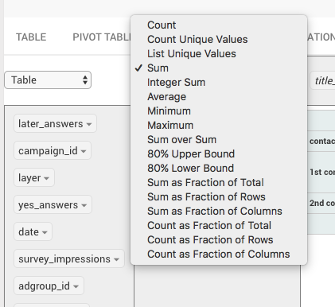

i was wondering if it would be possible to add a “calculated field” into the Pivot visualization, like you have in MS Excel and Google Spreadsheets? Also would it be possible to add additional “value” fields, e.g. sum of X AND sum of Y?

Basically i want to calculate the ratio between 2 values and display them all together (e.g. impressions | answers | conversion rate (answers/impressions), which isn’t really doable in the SQL because of aggregation issues (why i use a pivot table in the first place).
Cannot take cumulative totals in pivot table as there is no provision for running totals like excel or Calc.
Cannot write a sql query for the same as cumulative sums should be dynamic based on the pivot table slicing.
+1 for this feature. Doing a COUNT on attribute in SQL, displaying it fine in Pivot Table, but want to run a simple division calc between 2 columns to get a rate. Example: column 1 - Total Sends, column 2 - Total Opens. I can’t add a new column which would be a calc on col 1 and 2.
This feature has been requested for over 2 years, I’m just wondering if we can get an update on whether or not there’s a plan to either add it or not add it.
At least if the owners can post an official response it would be helpful.
It’s not on the roadmap but we’d gladly review a pull request
Generally speaking there are two options here: change the existing visualization or add a different one. Pivot tables are to Redash like any other visualization: it’s all modular.
After some searching, I don’t see any open source components that support calculated fields. If you find one, it’s straightforward to add it to Redash. This paid component from SyncFusion has them, but we can’t distribute that with our open source product.
We plan to make adding visualizations easier after the react migration. That way users could incorporate paid visualization tools (like HighCharts or SyncFusion). For now, our pivot table is comparable to other OSS tools so I don’t see any “quick wins” here.
Calculated table fields are a good idea that would obviously be most convenient as part of Redash. For now, one workaround is to use IMPORTDATA with Google sheets to visualize results from the Redash API. Or see if your database supports native pivots (MSSQL has the PIVOT keyword, postgres uses CROSSTAB).
Thank you for the prompt reply.
That is greatly appreciated as is your response. Also thank you for welcoming the Pull Request.
I will take a look at the project and see if I can familiarize myself with it’s structure and PR process.
Hopefully I can assist in making some progress in this request.